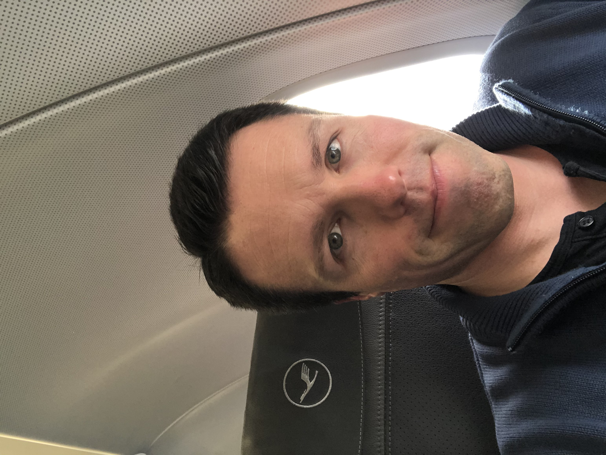

Interest in IT
What is your interest in IT? When did your interest in IT start? Was there a particular event or person that sparked your interest? Outline your IT experience (if any).
Growing up I was interested in computers and enjoyed using them for school assignments, however I never really delved into how they work and the possibilities that computers give us. Now computers are all around us and are the way of the future. In 2018 I was fortunate enough to be part of a team that was responsible for the implementation of a new financial reporting system for the airline I worked for. This involved travelling around Europe and taking part in meetings that discussed how this new system would not only impact the company in a global way, but also on a smaller local scale. We also had to identify what obstacles base line staff would have by implementing a new financial system.
It was through this positive experience that I realized how important it is for companies to move forward with information technology advancements, and how much I enjoyed learning about this topic myself as I worked more closely on the project. I really enjoyed working in a team of colleagues that were motivated to making this change a positive milestone in the company's history, and so through this example I also realized that I would like to keep working in IT project management teams if one day given the chance.
Apart from this, I have had no real previous IT experience apart from using computers at school and at work as an end user.
Why did you choose to come to RMIT?
I was actually working towards my Bachelor of Business with OUA while still working full time, when at the beginning of 2020, a world health pandemic caused airlines to drastically reduce their schedules or discontinue flying all together. Due to not being able to carry out my normal duties, my working hours were reduced to only 20%, and we had to work from home. It was in March of 2020 that I seriously began to consider how important a career change may be.
If another virus sweeps throughout the world and people cannot fly once again, then working in the airline industry does not provide good job security. I therefore decided to follow my interest in IT as it not only can provide valuable job security, however can also teach me many great skills that I can use outside of my working environment. I therefore contacted OUA and requested to change my degree to study IT. They recommended the Bachelor of Information Technology to me through RMIT. Because I went to high school in Melbourne and started my working career there, I knew that RMIT has a very good reputation and would be a great education provider to teach me what I need to learn to be successful in finding a job in the IT industry.
What do you expect to learn during your studies?
I would definitely love to learn more about web design and IT networking through these studies. However my aim is simply to learn as much as possible. I hope to be able to learn more about new tools available to enhance my creativity side. Hopefully this course will open my eyes to the endless amount of possibilities that the future will provide for us through IT advancements.
